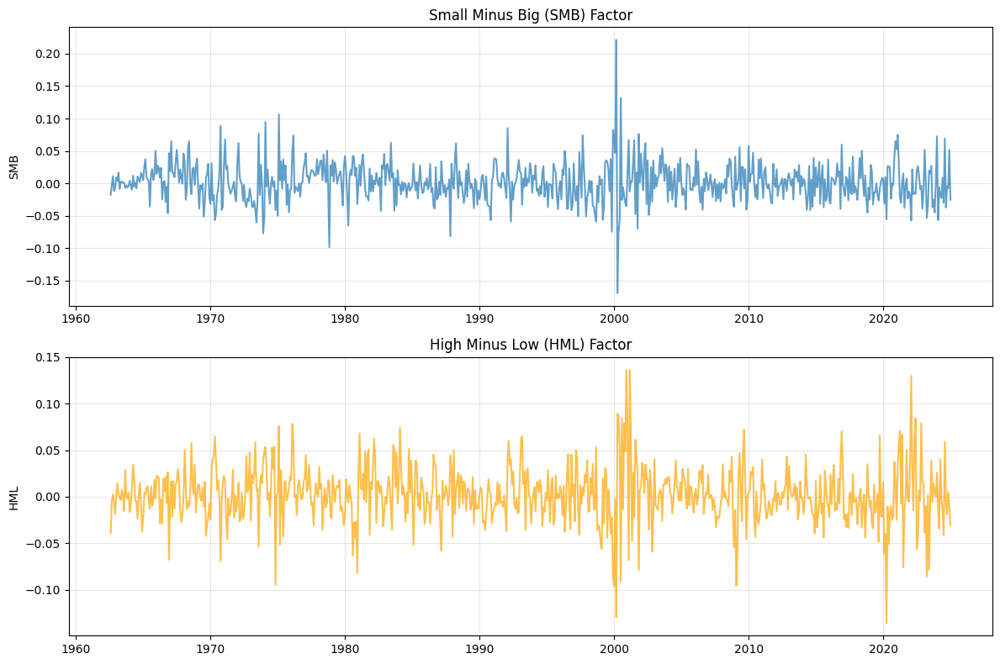
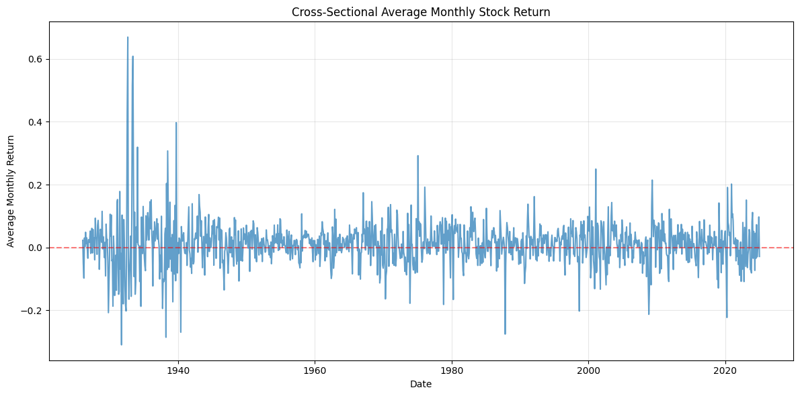
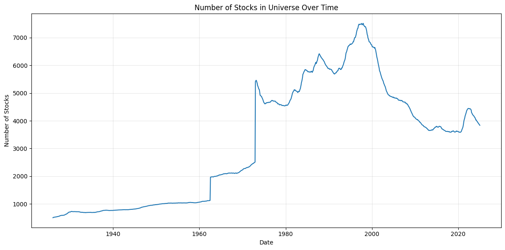

CRSP and Compustat Summary#
import sys
sys.path.insert(0, "./src")
import pandas as pd
import matplotlib.pyplot as plt
import seaborn as sns
import chartbook
BASE_DIR = chartbook.env.get_project_root()
DATA_DIR = BASE_DIR / "_data"
Data Overview#
This pipeline produces CRSP stock returns and Fama-French factor data:
Individual stock monthly returns (with and without dividends)
Fama-French SMB and HML factors (replicated from CRSP/Compustat)
Data Sources#
CRSP Monthly Stock File (CIZ format)
Compustat Fundamentals Annual
CRSP-Compustat Link Table
CRSP Monthly Stock Returns#
df_ret = pd.read_parquet(DATA_DIR / "ftsfr_CRSP_monthly_stock_ret.parquet")
print(f"Shape: {df_ret.shape}")
print(f"Columns: {df_ret.columns.tolist()}")
print(f"\nDate range: {df_ret['ds'].min()} to {df_ret['ds'].max()}")
print(f"Number of unique stocks: {df_ret['unique_id'].nunique()}")
Shape: (3810519, 3)
Columns: ['unique_id', 'ds', 'y']
Date range: 1926-01-30 00:00:00 to 2024-12-31 00:00:00
Number of unique stocks: 26757
df_ret.describe()
| unique_id | ds | y | |
|---|---|---|---|
| count | 3.810519e+06 | 3810519 | 3.810519e+06 |
| mean | 4.967281e+04 | 1990-05-13 12:18:53.556452608 | 1.103806e-02 |
| min | 1.000000e+04 | 1926-01-30 00:00:00 | -1.000000e+00 |
| 25% | 2.088800e+04 | 1978-04-28 00:00:00 | -6.535450e-02 |
| 50% | 4.819500e+04 | 1992-09-30 00:00:00 | 0.000000e+00 |
| 75% | 7.884100e+04 | 2005-03-31 00:00:00 | 6.982400e-02 |
| max | 9.343600e+04 | 2024-12-31 00:00:00 | 2.658383e+01 |
| std | 2.845362e+04 | NaN | 1.843677e-01 |
Fama-French Factors (Replicated)#
try:
df_ff = pd.read_parquet(DATA_DIR / "FF_1993_factors.parquet")
print(f"Shape: {df_ff.shape}")
print(f"Columns: {df_ff.columns.tolist()}")
print(f"\nDate range: {df_ff['date'].min()} to {df_ff['date'].max()}")
# Summary statistics
print("\nSummary Statistics:")
print(df_ff[["SMB", "HML"]].describe())
# Time series plot
fig, axes = plt.subplots(2, 1, figsize=(12, 8))
axes[0].plot(df_ff["date"], df_ff["SMB"], label="SMB", alpha=0.7)
axes[0].set_ylabel("SMB")
axes[0].set_title("Small Minus Big (SMB) Factor")
axes[0].grid(True, alpha=0.3)
axes[1].plot(df_ff["date"], df_ff["HML"], label="HML", color="orange", alpha=0.7)
axes[1].set_ylabel("HML")
axes[1].set_title("High Minus Low (HML) Factor")
axes[1].grid(True, alpha=0.3)
plt.tight_layout()
plt.show()
except FileNotFoundError:
print("Fama-French factors file not found")
Shape: (762, 3)
Columns: ['date', 'SMB', 'HML']
Date range: 1961-07-31 00:00:00 to 2024-12-31 00:00:00
Summary Statistics:
sbport SMB HML
count 750.000000 750.000000
mean 0.001812 0.002303
std 0.030005 0.030226
min -0.169237 -0.135843
25% -0.016169 -0.014193
50% 0.000754 0.001639
75% 0.018759 0.016882
max 0.221418 0.136524

Return Distribution Over Time#
# Monthly average return
monthly_avg = df_ret.groupby("ds")["y"].mean().reset_index()
fig, ax = plt.subplots(figsize=(12, 6))
ax.plot(monthly_avg["ds"], monthly_avg["y"], alpha=0.7)
ax.set_xlabel("Date")
ax.set_ylabel("Average Monthly Return")
ax.set_title("Cross-Sectional Average Monthly Stock Return")
ax.grid(True, alpha=0.3)
ax.axhline(y=0, color='r', linestyle='--', alpha=0.5)
plt.tight_layout()
plt.show()

Number of Stocks Over Time#
stock_count = df_ret.groupby("ds")["unique_id"].nunique().reset_index()
stock_count.columns = ["date", "n_stocks"]
fig, ax = plt.subplots(figsize=(12, 6))
ax.plot(stock_count["date"], stock_count["n_stocks"])
ax.set_xlabel("Date")
ax.set_ylabel("Number of Stocks")
ax.set_title("Number of Stocks in Universe Over Time")
ax.grid(True, alpha=0.3)
plt.tight_layout()
plt.show()

Data Definitions#
CRSP Stock Returns#
Variable |
Description |
|---|---|
unique_id |
CRSP PERMNO (permanent security identifier) |
ds |
Month-end date |
y |
Monthly return (including dividends) |
Fama-French Factors#
Factor |
Description |
|---|---|
SMB |
Small Minus Big - Size factor |
HML |
High Minus Low - Value factor |
Factors are constructed following Fama-French (1993) methodology using NYSE breakpoints.